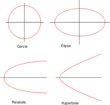

Le poids est une manifestation "locale" d'une des 4 forces qui régissent l'univers : la force gravitationnelle.
Soit 2 corps sphériques (planètes, étoiles,...) P1 et P2, de centre M1 et M2, de masse m1 et m2. Soit d la distance entre les 2 centres (d=$||\vec{M1M2}||$)

La force gravitationnelle exercée par P2 sur P1 a les caractristiques suivantes :
- norme : $||\vec{F}||=\frac{G.m1.m2}{d^2}$ avec G la constante universelle de gravitation, $G=6,67.10^{-11} N.m^2.Kg^{-2}$
- direction : la droite (M1M2)
- sens : de M1 vers M2
À faire vous-même 6.1
En utilisant la classe "Mobile", créez un programme permettant de simuler l'effet de la gravitation sur 2 astres P1 et P2. Testez votre programme
Pour vous aider :
- en utilisant la relation de Chasles, on obtient la relation suivante : $\vec{M1M2}=\vec{OM2}-\vec{OM1}$
- vous pouvez prendre $2.10^{30}$ pour m2, la masse de P2 (qui jouera le rôle d'une étoile) et $6.10^{24}$ pour m1, la masse de P1 (qui jouera le rôle d'une planète). Dans Processing, il faudra écrire 2e30 pour m1 et 6e24 pour m2.
- À cause de l'échelle (temps et espace), il est sans doute judicieux de changer la valeur de G. Vous pourrez prendre $G=6,67.10^{-26}$ (6.67e-26 dans Processing).

Comme vous pouvez le constater, la collision entre la planète et l'étoile est inévitable ! Pourquoi alors les planètes orbitent autour de leur étoile sans jamais les percuter ?
Tout est une histoire de vitesse initiale. Si au début de la simulation la vitesse de P1 par rapport à P2 est nulle, alors il y aura collision. En revanche, avec une vitesse initiale bien choisie, il est possible d'obtenir ceci :
À faire vous-même 6.2
En repartant de l'exemple du "À faire vous-même 6.1", modifiez votre programme pour que la planète orbite autour de son étoile. En faisant vos essais, vous aurez sans doute l'occasion d'observer les 3 trajectoires possibles : elliptique, parabolique et hyperbolique (la trajectoire circulaire est un cas particulier de la trajectoire elliptique).
Il y a un léger problème dans les simulations créées ci-dessus : P2 exerce une force sur P1, mais pourquoi P1 n'exercerait pas une force sur P2 ?
En fait, P1 exerce bien une force sur P2, nous pouvons même dire, d'après la 3e loi de Newton, que la force exercée par P1 sur P2 a la même norme et la même direction que la force exercée par P2 sur P1, en revanche, ces 2 forces ont des sens opposés.
Pourquoi alors les simulations ci-dessus ont l'air tout à fait correctes malgré l'omission de la force exercée par P1 sur P2 ?
La masse de P2 est beaucoup plus importante que la masse de P1. Ils subissent la même force (en norme), mais, comme nous l'indique la 2e loi de Newton, l'effet d'une force sur un mobile est inversement proportionnel à la masse du mobile : la force a un effet important sur P1 et quasiment aucun effet sur P2.
Remarque : la présence de la planète P1 fait tout de même très légèrement osciller l'étoile P2. L'observation de cette oscillation est une des méthode employée pour détecter les planètes extrasolaires (détection exoplanète).
À faire vous-même 6.3
Créez une simulation avec 2 étoiles de masse identique (on pourra prendre m = $4,5.10^{30}$ et $G=6,67.10^{-26}$). À vous de trouver des vitesses initiales permettant obtenir ceci :
Nous obtenons ci-dessus quelque chose qui pourrait s'apparenter à une étoile binaire.